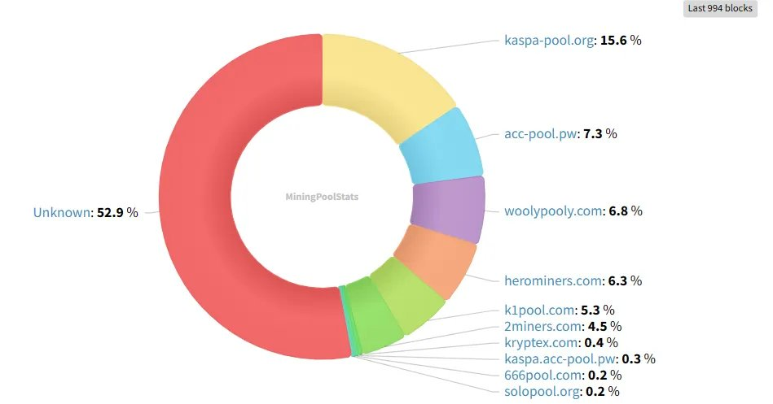
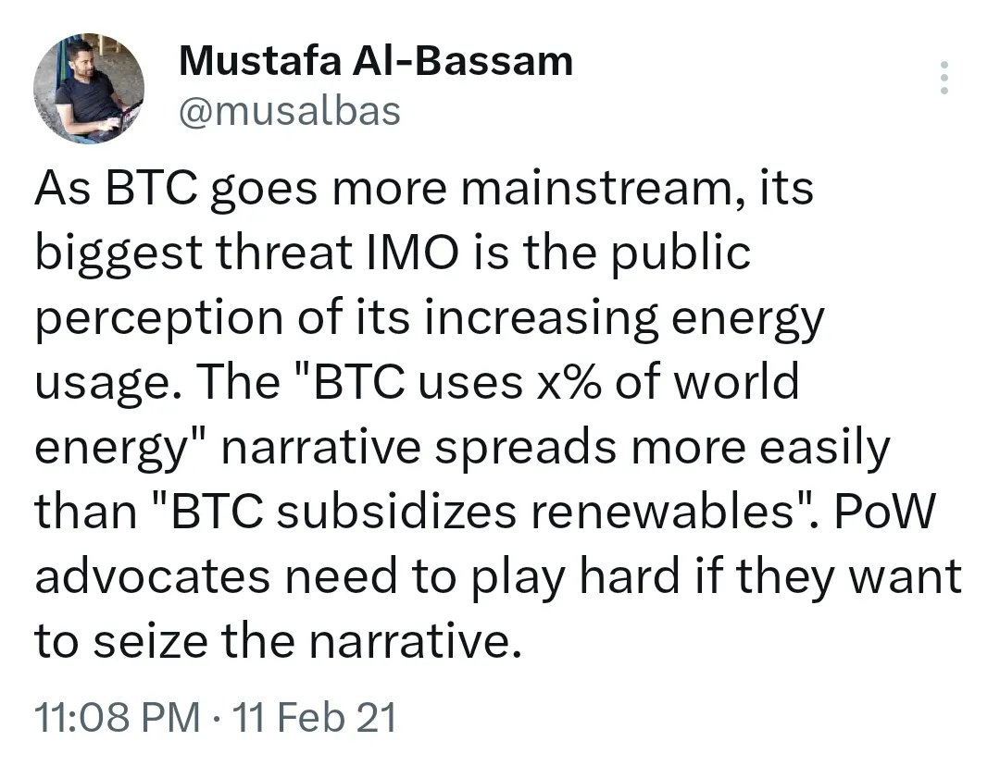
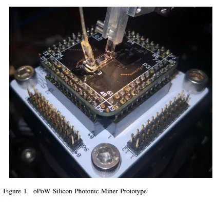

Exciting times for Kaspa!

Kaspa is gaining traction, more eyes on us, different edges, intentions, interests. These interests may be at odds, but we are very early in our growth path, still categorically a positive-sum game.
In particular, future arrival of ASICs will be an overall positive for Kaspers, GPU miners included, similarly to GPU miners' arrival being a big win for the CPU miners which they outmined.
Decentralization has more to do with the openness, permissionless, level-field nature of the market rather than the degree of heterogeneity in outcome. Fewer entities dominating mining is not in and of itself a sign of centralization, as long as they are unable to impose nonlinear rich-get-richer effects; for an example of the latter in longest-chain consensus, see Theorem 4 in this paper.
We are all romantically biased towards a visually egalitarian hashrate distribution pie-chart (a sentiment which leads many, in sociopolitical contexts, to wrongly expect fair systems to demonstrate equal outcomes). And, admittedly, capital itself is a barrier-to-entry and brings about some non-linearity to the game. However, this is the price of victory, paid by each and every ecosystem when passing the tipping point.
Moreover, Kaspa uniquely requires CapEx-heavy mining to fulfill its vision, as will be explained shortly. And so, when time comes and Kaspa shifts into "heavy" mining, we will welcome its maturity phase with great satisfaction, albeit a tinge of sadness.
Kaspa perfects the consensus layer, primarily in terms of speed of confirmation; secondary — throughput capacity, decentralization; down the pipeline — MEV resistance.
Speed of confirmation is contingent on the mining market being illiquid, since in liquid mining environments, 51% attackers are theoretically — and, in low marketcaps, practically — feasible, and can be fended away by waiting time (or/and finality gadgets) and not by num of confirmations.
Typically, liquid vs illiquid is characterized by GPU vs ASIC, more inherently it is OpEx vs CapEx. The more CapEx will dominate mining costs, the less feasible it'd be for an attacker to rent temporary hashrate, eg via NiceHash; currently, about 5.3% of Kaspa network is NiceHash-able, and so we are seemingly still in safe illiquid territory.
CapEx-heavy mining is also more efficient (aka "energy efficient"), as a smaller fraction of the security budget is burnt with every new block. This efficiency is important both for the deflationary (no KAS minting) phase of Kaspa, but mainly for addressing the wastefulness of mining heads on, which is imperative if we are to aim at mass adoption. Notwithstanding the good arguments defending the energy consumption dynamics of POW, in its current form, POW is politically infeasible, and adoption considerations should supersede fundamentalism.

All in all, CapEx-heavy mining is essential for virtually instantaneous confirmation times in permissionless consensus, thus for Kaspa to fulfill Satoshi's p2p electronic cash vision.
Note: Indeed PoS is pure CapEx, but the security considerations at the limit itself are non-continuous — a system with epsilon OpEx behaves materially differently than one with 0 OpEx, as the latter requires internal, state-dependent Sybil protection whereas the former hinges on external sources to distribute voting power.
Optical computation is a technology that utilizes interactions of photons, rather than electrons, to process computation. Optical POW (OPOW), envisioned by Michael Dubrovsky, is a POW-function optimized for optical machines. The low energy consumption would render OPOW extremely CapEx-heavy, and would thus be ideal for Kaspa, following above reasoning.

The current POW-function of Kaspa, kHeavyHash, is already friendly to optical ASICs. This function can probably be further optimized, more R&D is needed here.
For the original OPOW paper see arxiv.org/abs/1911.05193; for a recent Stanford lab paper on OPOW see techfinder.stanford.edu.
OPOW is a decentralizing force. It levels the mining field by centering competition around capital rather than energy, the former being order-of-magnitude easier to transport, convert, and distribute.
Aside from geographical decentralization, the low-carbon signature additionally allows for stealth mining operations, the existence of which is essential for censorship resistance (recall Ethereum's OFAC-compliant effective censorship of Tornado Cash transactions).
AFAIK optical ASICs will not enter the game in the short-to-mid term, pace depends on R&D efforts and funding, which is fortunately above my paygrade. Nevertheless, it is important to recollect and reaffirm the original vision we had when choosing Kaspa's kHeavyHash, and to ensure community alignment around this.
Changes to the current version of kHeavyHash are probably necessary in order to optimize for OPOW, ideally parameter adjustments only, and with reasonable heads up to the mining community. Governance of such changes is TBD, and will depend on whether and how we can avoid centralization on the manufacturing end. This way or another, optical tech initiatives should be first citizens in Kaspa colony, as they are vital for a p2p electronic cash system to scale up while maintaining Satoshi principles, efficient security budget, geographical decentralization, political feasibility.
TLDR; Kaspa operates at the speed-of-light.